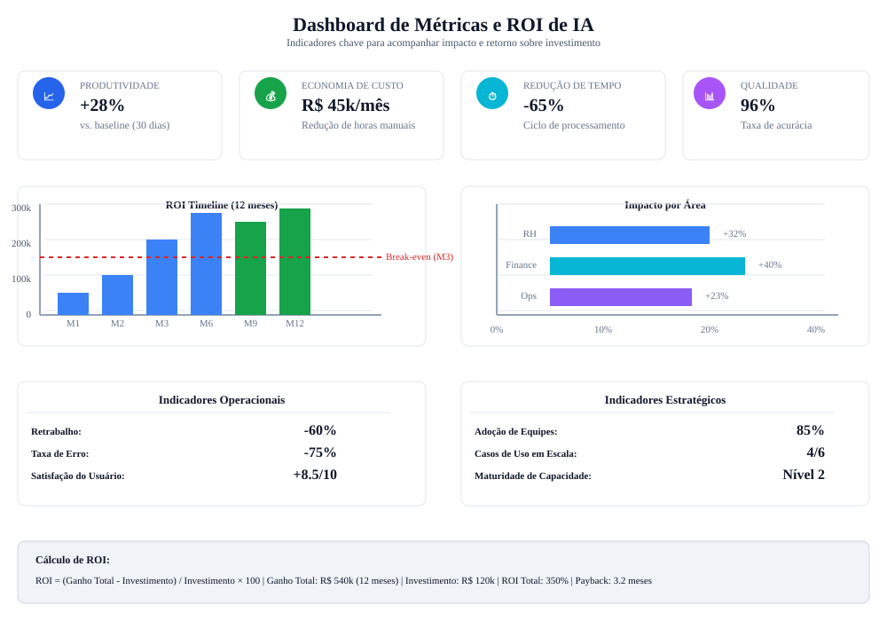

Checklist acionável
Planejamento em etapas curtas e claras.
Checklist Final
Use esta lista prática para sair da teoria e entrar em execução. Marque os itens conforme avançar.
Planejamento em etapas curtas e claras.
Monitore avanço e corrija desvios cedo.
Amplie só após comprovar estabilidade.
Sistema didático do checklist
Resumo
Execução consistente exige ritual semanal de medição, ajuste e decisão, não ação pontual sem acompanhamento.
Exemplo real
Times que combinam baseline, checkpoint semanal e revisão de risco costumam estabilizar ganho em menos de 3 meses.
Prompt pronto
Use os prompts desta página para criar dashboard de execução e relatório de decisão de escala ao final do ciclo.
Atenção
Sem medir qualidade e adoção junto de produtividade, a iniciativa pode parecer boa no curto prazo e falhar na escala.
Avalie cada processo com nota de 1 a 5 em Impacto, Confianca e Esforco. Prioridade alta = maior Impacto e Confianca com menor Esforco.
| Processo candidato | Impacto (1-5) | Confianca (1-5) | Esforco (1-5) | Prioridade sugerida |
|---|---|---|---|---|
| Triagem de chamados internos | 4 | 4 | 2 | Alta |
| Conferencia de documentos financeiros | 5 | 3 | 3 | Alta |
| Geração de relatórios gerenciais | 3 | 4 | 2 | Media |
| Forecast completo de demanda | 5 | 2 | 5 | Media/Longo prazo |

| Período | Objetivo | Entregáveis | KPI principal |
|---|---|---|---|
| 0 a 30 dias | Piloto validado | Fluxo com IA + revisão humana + baseline de métricas | Tempo de execução do processo |
| 31 a 60 dias | Padronização | Biblioteca de prompts, política de uso e treinamento | Taxa de retrabalho |
| 61 a 90 dias | Escala controlada | Expansão para nova área e painel de monitoramento | Ganho financeiro anualizado |
Bloco intensivo para colocar a IA em produção com controle de risco.
Definição de escopo, dados permitidos e ferramenta de apoio.
Carga: 1h
Operação assistida em ambiente real com monitoramento de exceções.
Carga: 1h
Comparação de baseline e ajustes no fluxo, prompts e critérios.
Carga: 1h
Definição de próximo processo e estratégia de expansão.
Carga: 1h
Prompt para iniciar projeto de IA na empresa
Atue como PMO de transformação digital. Monte um plano de kickoff para implementação de IA em processos administrativos da empresa [nome]. Inclua: - Objetivos do projeto - Escopo inicial - Papéis e responsabilidades - Cronograma de 90 dias - KPIs de monitoramento - Riscos e mitigação
Aplicacao pratica para transformar teoria de Checklist em ganho operacional mensuravel.
Mapeie o fluxo atual de roteiro de implantacao 90 dias e identifique gargalos de tempo, custo e retrabalho.
Evidencia: mapa AS-IS com 3 gargalos priorizados.
Desenhe um piloto de 2 semanas para implementacao imediata em ambiente real, com escopo controlado e checkpoints diarios.
Evidencia: plano de execucao com dono, prazo e criterio de parada.
Defina baseline e metas para aderencia ao plano de execucao, comparando antes vs depois com o mesmo periodo.
Evidencia: painel simples com 3 KPIs e tendencia semanal.
Implemente regras de revisao humana, classificacao de dados e trilha de auditoria das decisoes.
Evidencia: checklist de risco com responsaveis e frequencia de revisao.
Planeje extensao para um segundo processo mantendo qualidade, custo sob controle e aprendizagem da equipe.
Evidencia: roadmap 30-60-90 dias com marco de escala.
Prompts curados para acelerar analise, decisao e implantacao com foco em Checklist.
Prompt 1: Diagnostico executivo
Atue como consultor de implementacao imediata em ambiente real. Faça um diagnostico rapido do processo [roteiro de implantacao 90 dias] com 5 gargalos, impacto estimado e prioridade de ataque.
Prompt 2: Plano 30-60-90
Monte um plano 30-60-90 dias para implementar IA em [roteiro de implantacao 90 dias] incluindo objetivos, entregas por fase, donos e riscos.
Prompt 3: KPIs e baseline
Defina um modelo de medicao para [aderencia ao plano de execucao] com baseline, meta trimestral, formula e frequencia de acompanhamento.
Prompt 4: Governanca minima
Crie uma politica minima de uso de IA para este contexto com regras de dados, revisao humana, aprovacao e auditoria.
Prompt 5: Escala com controle
Proponha como escalar o piloto para outra area sem perder qualidade, informando criterios de readiness e plano de capacitacao.
Use estes prompts para garantir que a implementação saía conforme plano e ajuste rápido se necessário.
Prompt: Checklist de pré-requisitos (semana 0 antes de começar)
Antes de começar o projeto de 90 dias, garantir que todos estes pré-requisitos estão prontos: ORGANIZAÇÃO: ☐ Dono do projeto nomeado (quem é responsável?) ☐ Equipe dedicada (quantas pessoas? Quanto tempo cada uma?) ☐ Orçamento aprovado e reservado (R$?) ☐ Suporte de liderança (qual executivo? Que frequência de governança?) DADOS: ☐ Dados históricos disponíveis (quantos exemplos? Qualidade ok?) ☐ Acesso aos dados garantido (permissão de quem? Segurança ok?) ☐ Dicionário de dados documentado (o que significa cada campo?) ☐ Dados limpos e validados (alguém já fez qualidade?) PROCESSO: ☐ Processo atual mapeado (fluxo entendido?) ☐ Métrica baseline medida (antes: X) ☐ Alvo da intervenção definido (depois: Y) ☐ Lógica de decisão documentada (qual regra o IA vai usar?) GOVERNANÇA: ☐ Comitê ou sponsor definido (quem aprova?) ☐ Plano de comunicação pronto (como avisar equipe?) ☐ Plano de risco/contingência (se falhar, plano B?) ☐ KPI de parada definido (quando pausar/cancelar?) SE ALGUM ☐ ESTÁ VAZIO → PAUSAR E RESOLVER ANTES DE COMEÇAR
Prompt: Dashboard semanal de monitoramento vs plano
Cada semana, acompanhe estes indicadores para garantir que o plano está sendo executado: TAREFAS & TIMELINE: - Tarefas planejadas para semana: [X] - Tarefas completadas: [Y] → On track? ☐ Sim ☐ Não ☐ Em risco - Bloqueador (se não está no prazo): [descrever] - Ação corretiva: [o que fazer?] QUALIDADE: - Taxa de erro do modelo: [X%] → Target é [Y%] - Casos que falharam e por quê: [descrever] - Aprendizado incorporado?: [sim/não] ENGAJAMENTO: - Equipe utilizando ferramenta?: [% da equipe] - Feedback recebido: [positivo/negativo/neutro - resumir] - Treinamento necessário?: [área/tópico] FINANCEIRO: - Custo acumulado: R$ [X] vs orçado R$ [Y] - Desvio: [%] - Projeção de overspent?: [sim/não] DECISÃO: ☐ Continue normalmente ☐ Continue com monitoria aumentada ☐ Pausa para ajustes ☐ Cancela e volta para plano B
Prompt: Relatório de conclusão (semana 13): validação e decisão de escala
Ao final de 90 dias, prepare relatório executivo com decisão de escala: OBJETIVO ORIGINAL: [reafirmar qual era o desafio] RESULTADO ALCANÇADO: - Métrica baseline (antes): [X] - Métrica pós-intervenção (depois): [Y] - Ganho absoluto: [Y - X] - Ganho relativo: [(Y-X)/X]% - Significância: [Atingiu target? Sim/Não] ANÁLISE DE SATISFAÇÃO: - Equipe satisfeita (1-10): [nota] - Facilidade de uso (1-10): [nota] - Adotaria novamente?: [sim/não/talvez] ANÁLISE FINANCEIRA: - Custo total investido: R$ [X] - Economia em 90 dias: R$ [Y] - ROI em 90 dias: [%]Z - Payback estimado: [X meses] APRENDIZADOS: 1. [Sucesso: o que deu certo?] 2. [Sucesso: o que deu certo?] 3. [Desafio: o que poderia ser melhor?] DECISÃO DE ESCALA: ☐ SIM - Escalar para [qual área/processo?] em [qual timeline?] ☐ TALVEZ - Precisa de ajustes primeiro: [quais?] ☐ NÃO - Cancelar e aprender [qual lição?] PRÓXIMOS PASSOS SE ESCALAR: [detalhar plano]